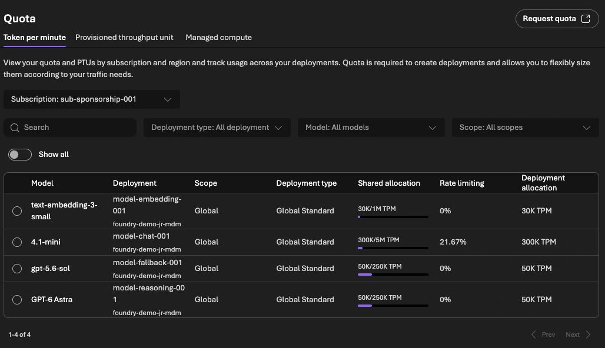

Foundry Agent Costs: Bound Tokens, Retries and Spend
A cheap model call can become an expensive agent run. The agent retries a failed tool, sends the growing conversation again and asks another model to check the result. The individual calls look reasonable; the completed task does not.
The recent discussion about per-user AI spending limits captures a real operational question: where does the system actually stop? I would answer that before negotiating a cheaper token price.
This guide separates Azure billing alerts, gateway token quotas and application-level admission. The local example uses fictional amounts and no model calls. Product references were checked on 20 October 2026.
Measure the cost of an accepted result
Start with a business unit that a person can evaluate: one correctly resolved ticket, one reviewed report or one document processed within the required quality threshold. A successful HTTP response is not that unit.
For a support workflow, I would record the total model usage, retrieval/tool costs, processing time, retries and final acceptance outcome under one task ID. An unresolved task still belongs in the cost numerator.
Cost per accepted result =
costs of all attempts in the period / accepted results in the periodDo not divide only the successful callsâ cost by successful calls. That hides the waste you need to investigate. Also keep fixed and capacity-based charges separate from per-request estimates. Foundryâs cost documentation covers several billing components; a token estimate is not a complete invoice. Foundry cost management
Give each control a specific job


| Control | Useful for | What I would not assume |
|---|---|---|
| Azure Cost Management budget | Financial reporting, forecasts and notifications | Immediate request blocking |
| APIM token quota | Bounding model traffic through a particular gateway path | An exact currency limit across every model and region |
| Application run budget | Deciding whether another step may start | Coverage of calls that bypass the application |
| Step count and deadline | Stopping loops and abandoned work | A substitute for tracking actual usage |
Azure budgets do not stop consumption automatically. Cost data and budget evaluation also have delay, so they cannot be the last control before an expensive request. Keep the alert, but attach it to a clear owner and response procedure. Azure budget behavior
Foundry also has a Cost Control CLI surface in preview. Verify the exact action, scope and enforcement behavior of the API version you use. A saved alert or audit rule is not evidence of a blocking limit. Cost Control reference
Reserve budget before calling the model
A check against completed spend misses concurrent requests. Two workers can both see the same remaining balance and both start work.
I would reserve a conservative amount before dispatch, then settle it against reported usage. The estimate needs the actual input, permitted output size and the serving optionâs current prices. Include a separate allowance for tools that can charge independently.
Here is the core of a local admission example. All amounts are fictional USD values; the class does not calculate a provider price:
from decimal import Decimal
from threading import Lock
from uuid import uuid4
class Budget:
def __init__(self, limit):
self.limit = Decimal(limit)
if not self.limit.is_finite() or self.limit <= 0:
raise ValueError("invalid limit")
self.spent = Decimal("0")
self.pending = {}
self.halted = False
self.lock = Lock()
def reserve(self, amount):
amount = Decimal(amount)
if not amount.is_finite() or amount <= 0:
raise ValueError("invalid reservation")
with self.lock:
if self.halted or self.spent + sum(self.pending.values()) + amount > self.limit:
raise RuntimeError("stop before calling the model")
key = str(uuid4())
self.pending[key] = amount
return key
def settle(self, key, actual):
actual = Decimal(actual)
if not actual.is_finite() or actual < 0:
raise ValueError("invalid cost")
with self.lock:
reserved = self.pending.pop(key)
self.spent += actual
if actual > reserved:
self.halted = True
raise RuntimeError("estimate exceeded; reconcile before resuming")
budget = Budget("5.00")
first = budget.reserve("2.00")
budget.reserve("2.00")
try:
budget.reserve("2.00")
except RuntimeError:
print("third request blocked")
budget.settle(first, "1.25")
assert budget.spent + sum(budget.pending.values()) == Decimal("3.25")The third reservation is rejected before a model call can start. The other pending reservation remains counted until it is resolved. If a timeout leaves the providerâs result unknown, do not simply refund it and launch the same work again.
The lock only coordinates threads in one process. A production service with multiple replicas needs a durable, atomic reservation store and reconciliation after restarts. This example is a test of the admission rule, not an Azure-wide spending guarantee.
Add a token boundary on the gateway route
For a shared pilot counter, an APIM policy can look like this:
<llm-token-limit
counter-key="support-pilot-v1"
tokens-per-minute="6000"
token-quota="60000"
token-quota-period="Daily"
estimate-prompt-tokens="true" />Those are example token limits, not recommended production values. Every request using this fixed key shares the same pilot counter. For tenant-specific limits, derive the key from a validated identity or trusted server-side mapping, not a header a caller can choose freely.
APIM documents different responses for rate and quota exhaustion, estimation behavior and possible overshoot with concurrent calls. Counters are also gateway-scoped. Test streaming and concurrency instead of treating the policy as an exact monetary cap. Token-limit policy
The AI gateway guide covers the routing layer. This control only helps when the calls actually pass through that gateway.
Bound retries across the entire task
Three attempts in the SDK, three in a tool wrapper and three in the outer agent loop can permit up to 27 attempts for one operation. That is an illustrative worst case, but it shows why I would count attempts centrally.
For each retry, check the remaining deadline, step count, reserved budget and whether repeating the operation is safe. Authentication failures need configuration changes, not repeated model reasoning. A persistent quota error should stop the run. A transient error can justify a bounded delay and another attempt if the task still has room.
Keep write operations out of blind retries. If a tool created a ticket but the acknowledgment was lost, check the business record or idempotency key before sending the create request again.
Test the stop, not only the alert
My local tests admitted only three of thirty one-unit reservation attempts against a three-unit budget, using a pool of ten workers. They also checked negative inputs, settlement and an underestimated request that pauses further admission. These are tests of the local example, not provider billing behavior.
Before a pilot, I would additionally test:
- A long input with the maximum allowed output.
- Several simultaneous requests near the remaining limit.
- A tool timeout after the backend has accepted work.
- A client disconnect while processing continues.
- A direct-backend request that should not bypass the gateway.
- A cost estimate that no longer matches the serving price.
Finally, compare estimates with actual cost data and include abandoned and unsuccessful runs. That gives you a useful discussion about model choice: which configuration delivers the required result within the budget, including the work needed to correct it?